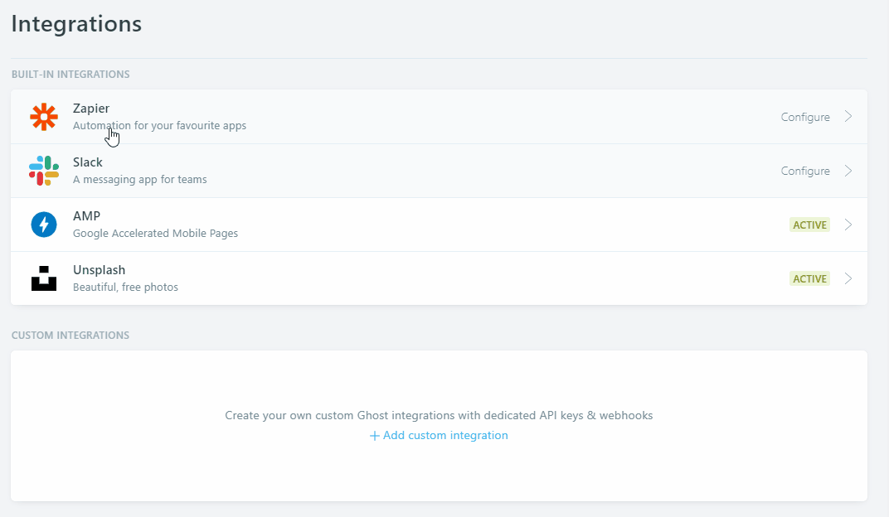
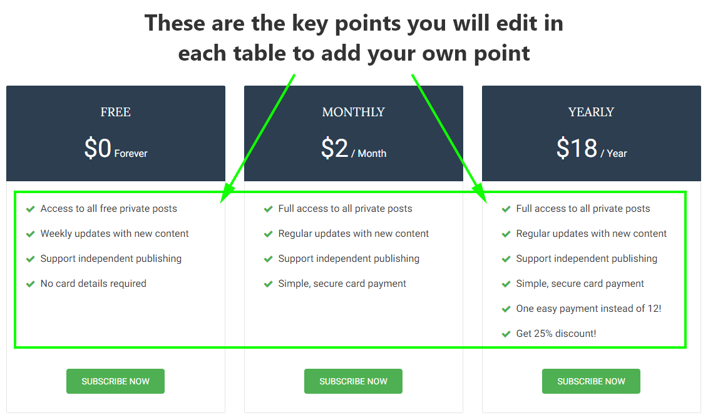
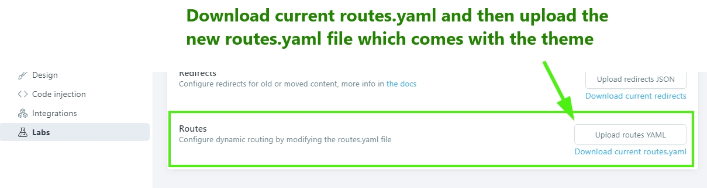

Thank you very much for purchasing this theme. If you have any questions that are beyond the scope of this help file, please feel free to send email via my user page contact form here. Thanks so much!
If you like this theme then consider to rate it. If you are going to to rate this below then please consider to tell me the reason before rating it. I will do my best to help you. you can send me a message here. To rate this item go here.
This documentation is intended to help you properly install and configure the theme on your ghost blog. Make sure to keep a backup before any modification.
If you are new to Ghost then some links may be useful to know about ghost itself:
To use the theme extract the main downloaded zip file and first of all make a backup of the theme main folder. theme backup is recomended becuse you can always get back to the fresh copy.
To configure this theme properly for your site please follow below instruction.
open config.hbs file located in partials folder with a plain text editor (like notepad, notepad++, Brackets editor, Sublime text etc).
Then replace the variable's value with your own values.
disqus_shotrname value to your won Disqus shotrname. To generate a disqus shortname...
config.hbs set disqus_shortname = 'yourDisqusShortnameHere';fixed_navbar to either true or false for fixed navbar or normal navbar. default value is true for fixed mavbar.ADD-API-KEY-HERE with your API key which you have copied.
The config.hbs file will look like below.
<script>
/*====================================================
THEME SETTINGS & GLOBAL VARIABLES
====================================================*/
// 1. Disqus comment settings
var disqus_shortname = 'quill-ghost-theme'; // required: replace example with your forum shortname
// 2. Fixed navbar
var fixed_navbar = true;
// 4. Content API key ( it required to search work)
var api_key = 'ADD-API-KEY-HERE';
</script>
At home page there is a slider which shows featured posts. By default it shows 5 featured posts ordered by latest published date.
Normally you don't need to change or setup anthing for this. But if you want to change the number of featured post in the slider then open follow steps below
{{#get "posts" limit="5" filter="featured:true" include="tags"}}The footer is widgetized. You can change the position or entirely remove any of theme if you wish.
To do that you have to make very little changes in footer.hbs file which is located in partials folder.
All the widget files are seperate in partials folder and named with prefix 'widget'. Example:- widget-newsletter.hbs
Please Follow the steps below.
footer.hbs file and then reorder the partials call.! before > in that widget.{{> widget-recentpost}} then add ! like this {{!> widget-recentpost}}Widgetize area in footer.hbs will look like this..
<div class="footer-top">
<div class="container">
<div class="row">
<div class="col-md-4">
{{> widget-recentpost}}
</div>
<div class="col-md-4">
{{> widget-tagcloud}}
</div>
<div class="col-md-4">
{{> widget-subscribe}}
{{> widget-social}}
</div>
</div>
</div>
</div>
To add the actual socilal links to the icons in footer, please follow the steps below.
social-links.hbs file located in partials folder.# for each href value with your own profile links.fa-* class in that line. For list of available icons in fontawesome visit here.The social-links.hbs file will look like below.
<div class="social-links-wrap align-center">
<ul class="social-links">
<li><a href="#"><i class="fa fa-facebook"></i></a></li>
<li><a href="#"><i class="fa fa-twitter"></i></a></li>
<li><a href="#"><i class="fa fa-dribbble"></i></a></li>
<li><a href="#"><i class="fa fa-instagram"></i></a></li>
<li><a href="#"><i class="fa fa-linkedin"></i></a></li>
<li><a href="/rss/"><i class="fa fa-rss"></i></a></li>
</ul>
</div>
Ghost introduced Members feature in Ghost version 3.0.0. This members feature is fully supported by this theme.
You can enable this member feature from the lab page in your ghost dashboard. Before Uploading the theme to your site you have to edit the text ( key points ) in your free, monthly and yearly pricing plan. Please follow the steps below to edit the key point you want to show in your pricing table.
Please follow the steps below to edit the above mentioned key points in each pricing table.
You will find following 3 files within the theme which are located in partials/members folder withinn the theme folder. These are three files for 3 different pricing plan.
Open First file start editing.
Starting from line number 10 in each file you will see those key points in each line one after one. See example as below.
<li>Access to all free private posts</li>
<li>Weekly updates with new content</li>
<li>Support independent publishing</li>
<li>No card details required</li>
Edit those sample text to add you own text. you can add as many line as you want.
When you are done with editing a file. Save that file and continue with the next file. Follow the same instruction to edit next file. Finish editing these files and you are ready to go to the next step.
You also have to upload another file routes.yaml in your ghost site to work all the membership related page correctly.
Go to lab page in your dashboard, scroll down and you will see an option for routes. There is a button to upload routes YAML and a link below that button to download the routes.yaml which is being used currently. Download that file and and keep as a backup.
In the downloaded zip you will find a routes.yaml file which comes with this theme and specific for this theme.
Upload that file. Using "upload routes YAML" button.
Please note, if you are using self hosted Ghost then may be a you need to restart ghost to take effect the new routes file. If you are using Ghost (pro). then you don't need to do anything here.
If you want to install the demo data to make your site as the preview then you can go to your-site-url/ghost/settings/labs/ and then import the quill.ghost.demo.json file there. This file is located in demo data folder in main download folder.
To add links to you static page please follow the steps below.
In Theme version 2.1.0 we added custom template for Tag archive and Author Archive. To use those template please follow the steps below.
For Tag archive page follow the same steps as author archive setting. At step 6 choose "Tag archive" option from dropdown select option. Then Follow all the remaining steps and you will be able to add a tag archive page in you site.
Ghost introduced Theme translation and blog localization feature in version 1.20.0. We implimented translation support to this theme. Please follow the steps below to translate this theme in your language. Please follow the steps below to correctly trtanslate the theme in your language.
To change the Theme color pleae follow the steps below.
variables.less file in your code editor. This file is located in assets/css/less_parts folder.screen.less file using less compiler. This file is located in assets/css folder. This will rebuild the screen.css file.The variables.less file looks like below.
/*====================================================
COLOR VARIABLE FOR THEME
====================================================*/
@theme-color: #2c3e50; // Theme color
@accent-color: #4eb052; // Accent color
@text-color: #404040; // Primary text color
@text-color-light: #909090; // Light text color
@text-color-dark: #161616; // Dark text color
@body-bg: #ececec; // Body background color
@footer-bg: #0e151b; // Footer background color
@light-bg: #f5f5f5; // Light background color
@border-color: #e4e4e4; // Border color
@black: #000000; // Pure black
@white: #FFFFFF; // Pure White
@success: #0ca910; // success message
@error: #f0134d; // error message
/*====================================================
font family
====================================================*/
@font-primary: 'Roboto', sans-serif;
@font-secondary: 'Lora', serif;
/*====================================================
social colors
====================================================*/
@facebook: #3b5998;
@twitter: #1da1f2;
@google-plus: #db4437;
@linkedin: #097bb5;
@pinterest: #cc2127;
@youtube: #b31217;
@vimeo: #1ab7ea;
@dribbble: #ea4c89;
@flickr: #ff0084;
@reddit: #ff4500;
@tumblr: #35465c;
@vk: #4c75a3;
@soundcloud: #ff5500;
@github: #4183c4;
@instagram: #3f729b;
@stumbleupon: #eb4924;
@stack-overflow: #fe7a15;
@stack-exchange: #205296;
@xing: #026466;
@skype: #00aff0;
@envelope: #e73d2f;
@rss: #f26522;
Once again, thank you so much for purchasing this theme. As I said at the beginning, I'd be glad to help you if you have any questions relating to this theme. I'll do my best to assist. If you have a more general question relating to the themes on ThemeForest, you might consider visiting the forums and asking your question in the "Item Discussion" section.
Happy Blogging
Best Regards
Biswajit Saha